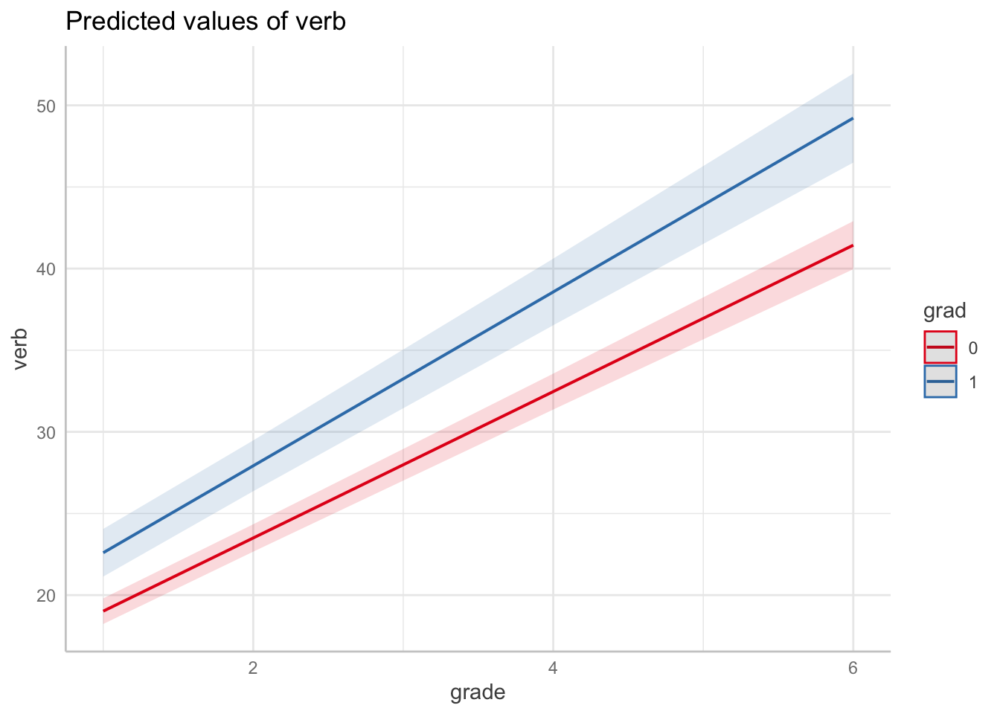

6.2 Intercept-Only Model
For our first example, we focus on verbal ability at Grade 2 as an outcome (verb2 in the data frame wiscsub). Examining the distribution for ‘verb2.’
library("ggplot2")
psych::describe(wiscsub$verb2)## vars n mean sd median trimmed mad min max range skew kurtosis se
## X1 1 204 25.42 6.11 25.98 25.4 6.57 5.95 39.85 33.9 -0.06 -0.34 0.43ggplot(data=wiscsub, aes(x=verb2)) +
geom_histogram(binwidth=2.5, fill="white", color="black", boundary=0) +
xlab("Verbal Ability Grade 2") + ylab("Count") +
xlim(0,50) +
theme_classic()
6.2.1 Intercept-Only Equation
The simplest model is an intercept only model. In this case, we would fit the model
\[ verb_{2i} = b_0 + \epsilon_{i}\]
Written out explicitly with the “silent” 1 in it, we get
\[ verb_{2i} = b_01_i + \epsilon_{i}\]
This is helpful for explicit translation into the R code, specifically the formula within the lm() function.
6.2.2 Intercept-Only Model in R
We fit the model using the following code. Note that the code has the ‘1’ predictor variable stated explicitly.
model1 <- lm(formula = verb2 ~ 1,
data = wiscsub,
na.action = na.exclude)
summary(model1)##
## Call:
## lm(formula = verb2 ~ 1, data = wiscsub, na.action = na.exclude)
##
## Residuals:
## Min 1Q Median 3Q Max
## -19.4653 -4.6403 0.5647 4.2822 14.4347
##
## Coefficients:
## Estimate Std. Error t value Pr(>|t|)
## (Intercept) 25.4153 0.4275 59.45 <2e-16 ***
## ---
## Signif. codes: 0 '***' 0.001 '**' 0.01 '*' 0.05 '.' 0.1 ' ' 1
##
## Residual standard error: 6.106 on 203 degrees of freedomNote that we used na.exclude instead of na.omit (default); practically speaking na.omit deletes missing data entries while na.exclude just excludes from the analysis.Therefore with na.exclude, in the residuals and fitted values, NA will show up where there were missing values.
The output indicates that \(b_0\) = 25.4153, and its standard error = 0.4275.
The intercept reflects the expected value of the outcome variable when all of the predictor variables (i.e. \(\left\{ x_{1i}, ..., x_{qi}\right\}\)) = 0. So, in the absence of any additional information other than the descriptive statistics of \(verb_{2i}\), what is our best guess for a person’s \(verb_{2i}\) score? It is the mean of \(verb_{2i}\). The regression above confirms this notion; regressing the outcome on a vector of 1s allows us to ‘recover’ the mean.
6.2.3 Intercept as Mean of Outcome
Notice we can confirm this finding using matrix algebra, as well.
\[ \mathbb{E}(verb_{2i}) = \mathbb{E}(b_01_i + \epsilon_{i}) \]
From the properties of expectation, we have \(\mathbb{E}(X+Y)=\mathbb{E}(X) + \mathbb{E}(Y)\).
\[ \mathbb{E}(verb_{2i}) = \mathbb{E}(b_01_i) + \mathbb{E}(\epsilon_{i}) \]
Another property of expectation relates to taking the expectation of a constant, \(\mathbb{E}(c)=c\), thus \(\mathbb{E}(b_01_i)=b_0\), implying
\[ \mathbb{E}(verb_{2i}) = b_01_i + \mathbb{E}(\epsilon_{i}). \] Remembering Assumption 1, \(\mathbb{E}(\epsilon_{i})=0\), we have
\[ \mathbb{E}(verb_{2i}) = b_0 \] We can confirm this by looking at Verbal Scores at Wave 2.
mean(wiscsub$verb2)## [1] 25.415346.2.4 Intercept-Only Model \(R^2\)
Yes - we recovered the mean, but we did not attempt to explain any of the variance. Let’s take a look at the variance explained for Model 1.
summary(model1)$r.squared## [1] 0It thus makes sense that we get 0 as the R-square. From the properties of variance, we know that \(\mathbb{V}(c)=0\). There is no variability due to the regression model because there are no predictors, only a constant.